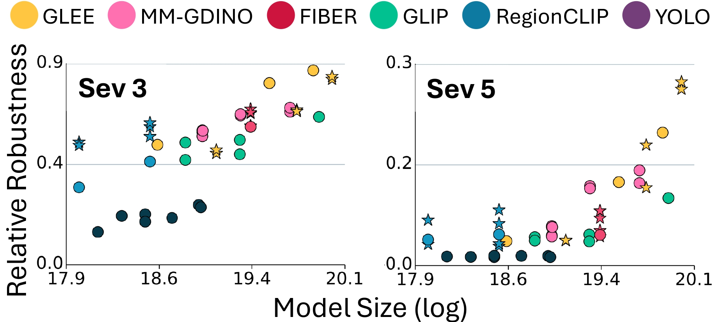
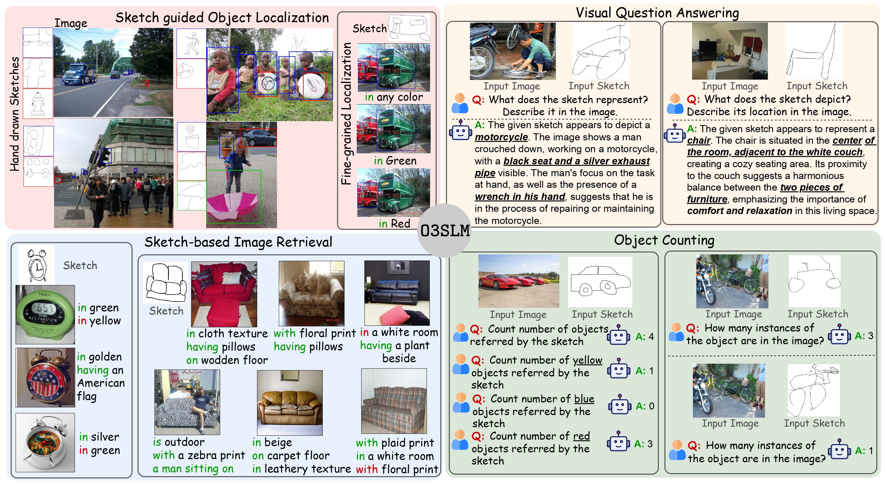

|
Mukilan Karuppasamy I'm a predoctoral researcher at IISc, Bangalore, working with Anirban Chakraborty on visual instruction tuning for multimodal large language models. Previously, I had the opportunity to work with CV Jawahar at IIIT Hyderabad on concept-based interpretability in video action recognition, and with Yogesh Singh Rawat at CRCV, UCF, on robustness analysis of vision-language models. I was also a MITACS Globalink Fellow in 2023, working on distributed message passing with Amine Mezhghani and Faouzi Bellili at the University of Manitoba. Earlier, I worked on virtual try-on systems using GANs with Brejesh Lall at IIT Delhi. |
{kind=link}
ResearchI'm interested in computer vision, interpretability, and robustness analysis. My current interest lies in understanding the theoretical basis of interpretability in overparameterized deep neural networks. Some papers are highlighted. |

|
Towards Safer and Understandable Driver Intention Prediction
Mukilan Karuppasamy, Shankar Gangisetty, Shyam Nandan Rai, Carlo Masone, CV Jawahar, ICCV, 2025 project page / arXiv Proposed a concept based inherently intrepretable model for Video models using concept bottleneck model and token merging. This was applied in Driver Intention Prediction task. |

|
Distributed Vector Approximate Message Passing
Mukilan Karuppasamy, Mohamed Akrout, Amine Mezghani, Faouzi Bellili, ICASSP, 2024 github / pdf Derived a collaborative signal estimation from multiple agents with different measurement channels through distributed message passing algorithm. |
|

|
Pixel Onion: Peeling Layers of Zero-Shot Object Detection in Pixelation
Priyank Pathak*, Mukilan Karuppasamy*, Aaditya Baranwal, Shyam Marjit, Shruti Vyas, Yogesh S. Rawat, * equal contribution, Under Review We critically examine the vulnerability of SOTA Zero-Shot Object Detectors with 50 different backbones to resolution degradation (`pixelation'). Two key takeaways are 1) The choice of backbone alone can substantially enhance robustness, while prompting (language) plays a minimal role. 2) Robustness is also a function of the dataset/domain of images at inference. A certain type of image are not affected by pixelation. |
|

|
O3SLM: Open Weight, Open Data, and Open Vocabulary Sketch-Language Model
Rishi Gupta*, Mukilan Karuppasamy*, Shyam Marjit, Aditay Tripathi, Anirban Chakraborty, * equal contribution Under Review Proposed a large scale sketch based pretraining and visual instruction tuning dataset with 30M instances. Developed a state of the art Sketch based Multimodal model which can perform detection, Counting, VQA, SBIR with any crude, hand drawn sketches as the query instead of natural language. |